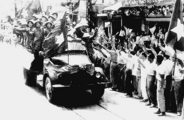
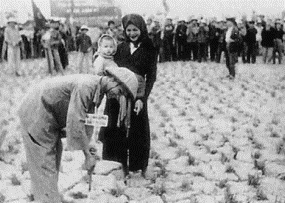
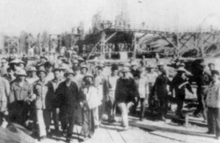
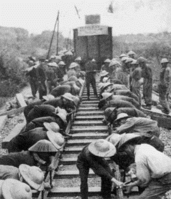
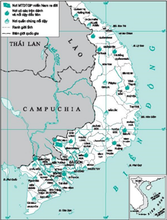
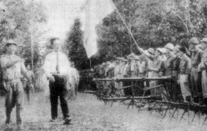
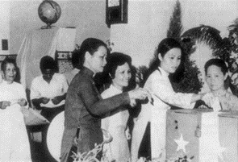

![]()
Bài 14: XÂY DỰNG CHỦ NGHĨA XÃ HỘI Ở MIỀN BẮC, ĐẤU TRANH CHỐNG ĐẾ QUỐC MĨ VÀ CHÍNH QUYỀN SÀI GÒN Ở MIỀN NAM (1954 – 1965)

Ngay sau khi Hiệp định Giơnevơ năm 1954 về Đông Dương được kí kết, Mĩ liền thay thế Pháp, dựng lên chính quyền Ngô Đình Diệm ở miền Nam, thực hiện âm mưu chia cắt Việt Nam, biến miền Nam Việt Nam thành thuộc địa kiểu mới và căn cứ quân sự của Mĩ ở Đông Dương và Đông Nam Á.
Do đó, sự nghiệp cách mạng dân tộc dân chủ nhân dân trên cả nước chưa hoàn thành, nhân dân ta vừa phải hàn gắn vết thương chiến tranh, khôi phục kinh tế ở miền Bắc, đưa miền Bắc tiến lên chủ nghĩa xã hội, vừa phải tiếp tục cuộc cách mạng dân tộc dân chủ nhân dân ở miền Nam, thực hiện hoà bình thống nhất nước nhà.
- Tình hình nước ta sau Hiệp định Giơnevơ năm 1954 về Đông Dương như thế nào ?
II – MIỀN BẮC HOÀN THÀNH CẢI CÁCH RUỘNG ĐẤT, KHÔI PHỤC KINH TẾ, CẢI TẠO QUAN HỆ SẢN XUẤT (1954 – 1960)
1. Hoàn thành cải cách ruộng đất, khôi phục kinh tế, hàn gắn vết thương chiến tranh (1954 – 1957)
a) Hoàn thành cải cách ruộng đất
Căn cứ vào hoàn cảnh thực tế ở miền Bắc và yêu cầu về quyền lợi kinh tế, chính trị của nông dân, củng cố khối liên minh công – nông, mở rộng mặt trận dân tộc thống nhất, Đảng và Chính phủ quyết định “Đẩy mạnh phát động quần chúng thực hiện cải cách ruộng đất”.
Thực hiện chủ trương của Trung ương, trong hơn 2 năm (1954 – 1956) miền Bắc tiến hành tiếp đợt 6 giảm tô và 4 đợt cải cách ruộng đất ở 3 314 xã thuộc 22 tỉnh đồng bằng và trung du. Khẩu hiệu “người cày có ruộng” đã trở thành hiện thực.
Qua 5 đợt cải cách ruộng đất , đã tịch thu, trưng thu, trưng mua khoảng 81 vạn hécta ruộng đất, 10 vạn trâu bò và 1,8 triệu nông cụ từ tay giai cấp địa chủ đem chia cho 2 triệu hộ nông dân.

Trong cải cách ruộng đất, chúng ta cũng phạm một số sai lầm như đấu tố tràn lan, thô bạo, đấu tố cả những địa chủ kháng chiến, những người thuộc tầng lớp trên có công với cách mạng, quy nhầm một số nông dân, cán bộ, đảng viên thành địa chủ.
Sai lầm của ta trong cải cách ruộng đất được Đảng, Chính phủ phát hiện và kịp thời sửa chữa. Công tác sửa sai được tiến hành trong cả năm 1957. Nhờ đó, hậu quả của sai lầm được hạn chế. Sau cải cách ruộng đất, bộ mặt nông thôn miền Bắc có nhiều thay đổi, khối liên minh công – nông được củng cố.
b) Khôi phục kinh tế, hàn gắn vết thương chiến tranh
Đây là nhiệm vụ tất yếu trong thời kì đầu sau chiến tranh. Kì họp thứ 4 Quốc hội khoá I (từ ngày 20 đến ngày 26 – 3 – 1955) đã quyết nghị : “Ra sức củng cố miền Bắc bằng cách đẩy mạnh và hoàn thành cải cách ruộng đất đúng theo kế hoạch, ra sức khôi phục và phát triển kinh tế – văn hoá”.
Công cuộc khôi phục kinh tế được toàn dân tích cực hưởng ứng và triển khai trong tất cả các ngành.
Trong nông nghiệp, nông dân hăng hái khai khẩn ruộng đất bỏ hoang, bảo đảm cày cấy hết ruộng đất vắng chủ, tăng thêm đàn trâu bò, sắm thêm nông cụ. Nhiều đập nước được sửa chữa. Nhiều công trình thuỷ nông mới được xây dựng, có tác dụng mở rộng diện tích tưới và tiêu nước.

Cuối năm 1957, sản lượng lương thực đạt gần 4 triệu tấn, tăng hơn 1,5 triệu tấn so với năm 1939. Nạn đói kinh niên ở miền Bắc căn bản được giải quyết.
Trong công nghiệp, chúng ta đã nhanh chóng khôi phục và mở rộng hầu hết các nhà máy, xí nghiệp bị phá hỏng, xây dựng thêm một số nhà máy mới như : cơ khí Hà Nội, diêm Thống Nhất, gỗ Cầu Đuống, thuốc lá Thăng Long, cá hộp Hải Phòng, chè Phú Thọ,... Đến cuối năm 1957, miền Bắc có 97 nhà máy, xí nghiệp lớn do Nhà nước quản lí.
Các ngành thủ công nghiệp, thương nghiệp nhanh chóng được khôi phục, bảo đảm cung cấp nhiều mặt hàng tiêu dùng thiết yếu cho nhân dân và giải quyết phần nào việc làm cho người lao động. Ngoại thương dần dần tập trung vào Nhà nước. Đến cuối năm 1957, miền Bắc đã đặt quan hệ buôn bán với 27 nước.
Trong giao thông vận tải, đã khôi phục 700 kilômét đường sắt, sửa chữa và làm mới hàng nghìn kilômét đường ô tô, xây dựng lại và mở rộng thêm nhiều bến cảng như : Hải Phòng, Hòn Gai, Cẩm Phả, Bến Thuỷ. Đường hàng không dân dụng quốc tế được khai thông.
Văn hoá, giáo dục, y tế được đẩy mạnh. Hệ thống giáo dục phổ thông theo chương trình 10 năm đã được khẳng định ; một số trường đại học được thành lập ; hơn 1 triệu người được xoá mù chữ.
Hệ thống y tế chăm sóc sức khoẻ cho nhân dân được Nhà nước quan tâm xây dựng. Nếp sống lành mạnh, giữ gìn vệ sinh được vận động thực hiện ở khắp mọi nơi.
Đảng và Nhà nước còn có nhiều chủ trương, biện pháp để củng cố chính quyền dân chủ nhân dân, tăng cường khả năng phòng thủ đất nước, mở rộng mặt trận dân tộc thống nhất và quan hệ ngoại giao với nhiều nước trên thế giới.

2. Cải tạo quan hệ sản xuất, bước đầu phát triển kinh tế – xã hội (1958-1960)
Trong ba năm (1958 – 1960), miền Bắc lấy cải tạo xã hội chủ nghĩa làm trọng tâm: cải tạo đối với nông nghiệp, thủ công nghiệp, thương nghiệp nhỏ, công thương nghiệp tư bản tư doanh, khâu chính là hợp tác hoá nông nghiệp.
Thực hiện chủ trương trên, khắp nơi trên miền Bắc sôi nổi phong trào vận động xây dựng hợp tác xã.
Đến cuối năm 1960, miền Bắc có trên 85% hộ nông dân với 70% ruộng đất vào hợp tác xã nông nghiệp, hơn 87% số thợ thủ công và 45% số người buôn bán nhỏ vào hợp tác xã. Một bộ phận thương nhân được chuyển sang sản xuất hoặc chuyển thành mậu dịch viên.
Đối với tư sản dân tộc, Đảng và Nhà nước chủ trương cải tạo bằng phương pháp hoà bình, sử dụng mặt tích cực của họ phục vụ cho công cuộc xây dựng đất nước. Đến cuối năm 1960, có hơn 95% số hộ tư sản vào công tư hợp doanh.
Trong cải tạo, chúng ta mắc một số sai lầm như đã đồng nhất cải tạo với xoá bỏ tư hữu và các thành phần kinh tế cá thể ; thực hiện sai các nguyên tắc xây dựng hợp tác xã là tự nguyện, công bằng, dân chủ, cùng có lợi ; do đó, chưa phát huy được tính tích cực, chủ động, sáng tạo của xã viên trong sản xuất.
Đồng thời với cải tạo là nhiệm vụ xây dựng, phát triển kinh tế – xã hội, trọng tâm là phát triển thành phần kinh tế quốc doanh. Đến năm 1960, đã có 172 xí nghiệp lớn do trung ương quản lí và trên 500 xí nghiệp do địa phương quản lí.
Những tiến bộ về mặt kinh tế đã tạo điều kiện cho sự nghiệp văn hoá, giáo dục, y tế phát triển. So với năm 1957, năm 1960, số học sinh tăng 80%, số sinh viên tăng gấp đôi. Các cơ sở y tế năm 1960 tăng 11 lần so với năm 1955.
– Miền Bắc đã đạt được những thành tựu gì trong công cuộc khôi phục kinh tế, hàn gắn vết thương chiến tranh ?
– Công cuộc cải tạo quan hệ sản xuất xã hội chủ nghĩa ở miền Bắc từ năm 1958 đến năm 1960 đã đạt được những thành tựu và có hạn chế gì ?
III – MIỀN NAM ĐẤU TRANH CHỐNG CHẾ ĐỘ MĨ –DIỆM, GIỮ GÌN VÀ PHÁT TRIỂN LỰC LƯỢNG CÁCH MẠNG, TIẾN TỚI “ĐỒNG KHỞI” (1954 – 1960)
1. Đấu tranh chống chế độ Mĩ – Diệm, giữ gìn và phát triển lực lượng cách mạng (1954 – 1959)
Cách mạng miền Nam từ giữa năm 1954 chuyển từ đấu tranh vũ trang chống Pháp sang đấu tranh chính trị chống Mĩ – Diệm, đòi thi hành Hiệp định Giơnevơ năm 1954, bảo vệ hoà bình, giữ gìn và phát triển lực lượng cách mạng.
Cuộc đấu tranh của nhân dân miền Nam vừa đòi Mĩ – Diệm thi hành Hiệp định Giơnevơ, đòi hiệp thương tổng tuyển cử tự do thống nhất đất nước, đòi các quyền tự do, dân sinh, dân chủ, vừa chống khủng bố, đàn áp, chống chiến dịch “tố cộng, diệt cộng”, chống trò hề “trưng cầu dân ý”, “bầu cử quốc hội” của Ngô Đình Diệm.
Mở đầu là “Phong trào hoà bình” của trí thức và các tầng lớp nhân dân ở Sài Gòn – Chợ Lớn vào tháng 8 – 1954. Trong “Phong trào hoà bình”, nhiều cuộc mít tinh, hội họp và đưa yêu sách đòi chính quyền thi hành nghiêm chỉnh Hiệp định Giơnevơ v.v. được tổ chức.
Mĩ – Diệm tăng cường khủng bố, đàn áp, lùng bắt những người lãnh đạo phong trào. Tuy vậy, phong trào đấu tranh vì mục tiêu hoà bình của các tầng lớp nhân dân tiếp tục dâng cao, lan rộng tới các thành phố khác và cả vùng nông thôn, mà tiêu biểu là ở Huế và Đà Nẵng. Phong trào đã lôi cuốn mọi tầng lớp nhân dân tham gia, hình thành mặt trận chống Mĩ – Diệm. Phong trào từ đấu tranh chính trị, hoà bình chuyển sang dùng bạo lực, tiến hành đấu tranh chính trị kết hợp với đấu tranh vũ trang, chuẩn bị cho cao trào cách mạng mới.
2. Phong trào “Đồng khởi” (1959 – 1960)
Trong những năm 1957 – 1959, cách mạng miền Nam gặp muôn vàn khó khăn, tổn thất. Tháng 5 – 1957, Ngô Đình Diệm ban hành đạo luật đặt cộng sản ngoài vòng pháp luật, ra Luật 10/59, công khai chém giết, làm cho hàng vạn cán bộ, đảng viên bị giết hại, hàng chục vạn đồng bào yêu nước bị tù đày. Cuộc đấu tranh của nhân dân ta ở miền Nam đòi hỏi có một biện pháp quyết liệt để đưa cách mạng vượt qua khó khăn, thử thách.

Tháng 1 – 1959, Hội nghị lần thứ 15 Ban Chấp hành Trung ương Đảng đã quyết định để nhân dân miền Nam sử dụng bạo lực cách mạng đánh đổ chính quyền Mĩ – Diệm. Hội nghị nhấn mạnh : Ngoài con đường dùng bạo lực cách mạng, nhân dân miền Nam không có con đường nào khác. Phương hướng cơ bản của cách mạng miền Nam là khởi nghĩa giành chính quyền về tay nhân dân bằng con đường đấu tranh chính trị là chủ yếu, kết hợp với đấu tranh vũ trang đánh đổ ách thống trị của Mĩ – Diệm.
Phong trào nổi dậy từ chỗ lẻ tẻ ở từng địa phương như cuộc nổi dậy ở Vĩnh Thạnh (Bình Định), Bác Ái (Ninh Thuận) tháng 2 – 1959, ở Trà Bồng (Quảng Ngãi) tháng 8 – 1959, đã lan ra khắp miền Nam thành cao trào cách mạng, tiêu biểu là cuộc “Đồng khởi” ở Bến Tre.
Ngày 17 – 1 – 1960, cuộc “Đồng khởi” nổ ra ở ba xã điểm là Định Thuỷ, Phước Hiệp, Bình Khánh thuộc huyện Mỏ Cày (Bến Tre), rồi nhanh chóng lan ra toàn huyện Mỏ Cày và các huyện Giồng Trôm, Thạnh Phú, Ba Tri, Châu Thành, Bình Đại.
Quần chúng nổi dậy giải tán chính quyền địch, thành lập Uỷ ban nhân dân tự quản, thành lập lực lượng vũ trang, tịch thu ruộng đất của địa chủ, cường hào chia cho dân cày nghèo.
Phong trào “Đồng khởi” lan ra các tỉnh Nam Bộ, Tây Nguyên và Trung Trung Bộ. Tính đến cuối năm 1960, ta đã làm chủ 600/1 298 xã ở Nam Bộ, 904/3 829 thôn ở vùng núi các tỉnh Trung Trung Bộ, 3 200/5 721 thôn ở Tây Nguyên.
Phong trào “Đồng khởi” giáng đòn nặng nề vào chính sách thực dân mới của Mĩ, làm lung lay tận gốc chính quyền tay sai Ngô Đình Diệm, đánh dấu bước phát triển của cách mạng miền Nam chuyển từ thế giữ gìn lực lượng sang thế tiến công.
Từ trong khí thế đó, Mặt trận Dân tộc giải phóng miền Nam Việt Nam ra đời (20 – 12 – 1960) do Luật sư Nguyễn Hữu Thọ làm Chủ tịch. Mặt trận chủ trương đoàn kết toàn dân, đấu tranh chống đế quốc Mĩ xâm lược và chính quyền Ngô Đình Diệm, thành lập chính quyền cách mạng dưới hình thức những uỷ ban nhân dân tự quản.

– Phong trào đấu tranh chống chế độ Mĩ – Diệm của nhân dân ta ở miền Nam đã diễn ra như thế nào trong những năm đầu sau Hiệp định Giơnevơ năm 1954 ?
– Phong trào “Đồng khởi” (1959 – 1960) ở miền Nam đã nổ ra trong hoàn cảnh như thế nào ? Nêu diễn biến, kết quả và ý nghĩa của phong trào.
Bài 15: VIỆT NAM TRONG NĂM ĐẦU SAU THẮNG LỢI CỦA CUỘC KHÁNG CHIẾN CHỐNG MĨ, CỨU NƯỚC NĂM 1975
Sau thắng lợi của cuộc kháng chiến chống Mĩ, cứu nước năm 1975, nhiệm vụ của cách mạng Việt Nam trong năm đầu là khắc phục hậu quả chiến tranh, khôi phục và phát triển kinh tế – xã hội ở hai miền, hoàn thành thống nhất đất nước về mặt nhà nước.
I - TÌNH HÌNH HAI MIỀN BẮC – NAM SAU NĂM 1975
Trải qua hơn 20 năm (1954 – 1975) tiến hành cách mạng xã hội chủ nghĩa, miền Bắc đạt được những thành tựu to lớn và toàn diện, đã xây dựng được những cơ sở vật chất – kĩ thuật ban đầu của chủ nghĩa xã hội. Nhưng cuộc chiến tranh phá hoại bằng không quân và hải quân của Mĩ đã tàn phá nặng nề, gây hậu quả lâu dài đối với miền Bắc.
“Chiến tranh phá hoại của Mĩ đã phá huỷ hầu hết những cái mà nhân dân ta đã tốn biết bao công sức để xây dựng nên, làm cho quá trình tiến lên sản xuất lớn bị chậm lại đến vài ba kế hoạch 5 năm”.
Miền Nam hoàn toàn giải phóng, chế độ thực dân mới của Mĩ cùng bộ máy chính quyền trung ương Sài Gòn bị sụp đổ, nhưng cơ sở của chính quyền này ở địa phương cùng bao di hại của xã hội cũ vẫn còn tồn tại. Cuộc chiến tranh của Mĩ đã gây ra hậu quả nặng nề. Nhiều làng mạc, đồng ruộng bị tàn phá. Nửa triệu hécta ruộng đất bị bỏ hoang. Một triệu hécta rừng bị chất độc hoá học và bom đạn cày xới. Vô số bom mìn còn bị vùi lấp trên các cánh đồng, ruộng vườn và nơi cư trú của nhân dân. Đội ngũ thất nghiệp lên tới hàng triệu người. Số người mù chữ chiếm tỉ lệ lớn trong dân cư.
Miền Nam có nền kinh tế trong chừng mực nhất định phát triển theo hướng tư bản chủ nghĩa, song về cơ bản vẫn mang tính chất của kinh tế nông nghiệp, sản xuất nhỏ và phân tán, phát triển không cân đối, lệ thuộc nặng nề vào viện trợ từ bên ngoài.
- Sau thắng lợi của cuộc kháng chiến chống Mĩ, cứu nước, cách mạng ở hai miền Bắc – Nam có thuận lợi và khó khăn gì ?
II – KHẮC PHỤC HẬU QUẢ CHIẾN TRANH, KHÔI PHỤC VÀ PHÁT TRIỂN KINH TẾ – XÃ HỘI Ở HAI MIỀN ĐẤT NƯỚC
Ở miền Bắc, cuộc chiến tranh phá hoại của Mĩ đã chấm dứt sau Hiệp định Pari năm 1973 về Việt Nam, nhưng do bị tàn phá nặng nề nên đến giữa năm 1976, mới căn bản hoàn thành nhiệm vụ khắc phục hậu quả chiến tranh, khôi phục kinh tế.
Trong việc thực hiện kế hoạch Nhà nước 6 tháng cuối năm 1975 và 6 tháng đầu năm 1976, miền Bắc có những tiến bộ đáng kể. Diện tích trồng lúa, hoa màu, cây công nghiệp năm 1976 đều tăng hơn năm 1975. Nhiều công trình, nhà máy được mở rộng và xây dựng mới. Sản lượng phần lớn các sản phẩm quan trọng đều đạt và vượt mức trước chiến tranh. Sự nghiệp văn hoá, giáo dục, y tế phát triển mạnh.
Miền Bắc còn làm nghĩa vụ của căn cứ địa cách mạng cả nước và nghĩa vụ quốc tế đối với Lào, Campuchia trong thời kì mới.
Ở miền Nam, công việc tiếp quản vùng mới giải phóng từ thành thị đến nông thôn, từ đất liền đến hải đảo, từ căn cứ quân sự đến các cơ sở sản xuất, hành chính, văn hoá được tiến hành khẩn trương.
Ở những vùng mới giải phóng, việc thành lập chính quyền cách mạng và đoàn thể quần chúng các cấp nhanh chóng được thực hiện. Tại các thành phố lớn như Sài Gòn, Huế, Đà Nẵng v.v., chính quyền cách mạng tuyên bố thành lập ngay sau khi được giải phóng.
Với sự hướng dẫn và giúp đỡ của Nhà nước, hàng triệu đồng bào ta, trong thời gian chiến tranh bị dồn vào các “ấp chiến lược” hay bỏ chạy vào các thành phố, không có việc làm, được hồi hương, chuyển về nông thôn tham gia sản xuất hoặc đi xây dựng vùng kinh tế mới.
Chính quyền cách mạng tịch thu toàn bộ tài sản và ruộng đất của bọn phản động trốn ra nước ngoài, tuyên bố xoá bỏ quan hệ bóc lột phong kiến, tiến hành điều chỉnh ruộng đất trong nội bộ nông dân, quốc hữu hoá ngân hàng, thay đồng tiền cũ bằng đồng tiền mới của cách mạng.
Chính quyền cách mạng chú trọng khôi phục sản xuất nông nghiệp để đáp ứng nhu cầu cấp bách và lâu dài của nhân dân về lương thực. Các cơ sở sản xuất công nghiệp, thủ công nghiệp và thương nghiệp, cả những cơ sở bị gián đoạn quan hệ với nước ngoài, đều trở lại hoạt động.
Các hoạt động văn hoá, giáo dục, y tế v.v. được tiến hành khẩn trương từ những ngày đầu mới giải phóng.
- Nêu những thành tựu đạt được trong việc khắc phục hậu quả chiến tranh, khôi phục kinh tế, ổn định tình hình miền Nam sau giải phóng năm 1975.
III – HOÀN THÀNH THỐNG NHẤT ĐẤT NƯỚC VỀ MẶT NHÀ NƯỚC (1975– 1976)
Sau đại thắng mùa Xuân 1975, Tổ quốc Việt Nam được thống nhất về mặt lãnh thổ, song ở mỗi miền vẫn tồn tại hình thức tổ chức nhà nước khác nhau. Thực tế đó trái với nguyện vọng, tình cảm thiêng liêng của nhân dân hai miền Bắc – Nam là sớm được sum họp trong một đại gia đình, mong muốn có một chính phủ thống nhất, một cơ quan đại diện quyền lực chung cho nhân dân cả nước.
Đáp lại nguyện vọng chính đáng của nhân dân cả nước, đồng thời cũng phù hợp với thực tế lịch sử dân tộc – “Nước Việt Nam là một, dân tộc Việt Nam là một” – Hội nghị lần thứ 24 Ban Chấp hành Trung ương Đảng (9 – 1975) đề ra nhiệm vụ hoàn thành thống nhất đất nước về mặt nhà nước.
Nghị quyết của Đảng nêu rõ : “Thống nhất đất nước vừa là nguyện vọng tha thiết của nhân dân cả nước, vừa là quy luật khách quan của sự phát triển cách mạng Việt Nam, của lịch sử dân tộc Việt Nam”.
Từ ngày 15 đến ngày 21 – 11 – 1975, Hội nghị Hiệp thương chính trị thống nhất đất nước được tổ chức tại Sài Gòn. Hai đoàn đại biểu đại diện cho hai miền tham dự. Hội nghị nhất trí hoàn toàn các vấn đề về chủ trương, biện pháp nhằm thống nhất đất nước về mặt nhà nước.
Ngày 25 – 4 – 1976, cuộc Tổng tuyển cử bầu Quốc hội chung được tiến hành trong cả nước. Hơn 23 triệu cử tri (chiếm 98,8% tổng số cử tri) đi bỏ phiếu và bầu ra 492 đại biểu.

Từ ngày 24 – 6 đến ngày 3 – 7 – 1976, Quốc hội khoá VI nước Việt Nam thống nhất họp kì đầu tiên tại Hà Nội.
Quốc hội thông qua chính sách đối nội và đối ngoại của Nhà nước Việt Nam thống nhất, quyết định tên nước là Cộng hoà xã hội chủ nghĩa Việt Nam (từ ngày 2 – 7 – 1976), quyết định Quốc huy mang dòng chữ Cộng hoà xã hội chủ nghĩa Việt Nam, Quốc kì là lá cờ đỏ sao vàng, Quốc ca là bài Tiến quân ca, thủ đô là Hà Nội, thành phố Sài Gòn – Gia Định được đổi tên là Thành phố Hồ Chí Minh.
Quốc hội bầu các cơ quan, chức vụ lãnh đạo cao nhất của nước Cộng hoà xã hội chủ nghĩa Việt Nam, bầu Ban dự thảo Hiến pháp.
Ở địa phương, Quốc hội quyết định tổ chức thành ba cấp chính quyền : cấp tỉnh và thành phố trực thuộc Trung ương, cấp huyện và tương đương, cấp xã và tương đương. Ở mỗi cấp chính quyền có Hội đồng nhân dân và Uỷ ban nhân dân.
Với kết quả của kì họp thứ nhất Quốc hội khoá VI, công việc thống nhất đất nước về mặt nhà nước đã hoàn thành. Từ đây, việc tiếp tục hoàn thành thống nhất trên tất cả các lĩnh vực chính trị, tư tưởng, kinh tế, văn hoá, xã hội sẽ gắn liền với việc thực hiện những nhiệm vụ của cách mạng xã hội chủ nghĩa trong phạm vi cả nước.
Hoàn thành thống nhất đất nước về mặt nhà nước đã tạo nên những điều kiện chính trị cơ bản để phát huy sức mạnh toàn diện của đất nước, những điều kiện thuận lợi để cả nước đi lên chủ nghĩa xã hội, những khả năng to lớn để bảo vệ Tổ quốc và mở rộng quan hệ với các nước trên thế giới.
Nước Cộng hoà xã hội chủ nghĩa Việt Nam vừa thành lập đã có 94 nước chính thức công nhận và đặt quan hệ ngoại giao. Ngày 20 – 9 – 1977, nước ta trở thành thành viên thứ 149 của Liên hợp quốc.